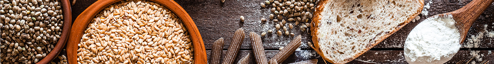
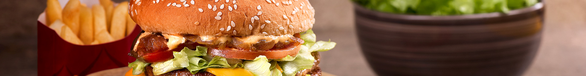
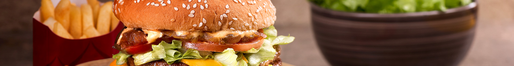
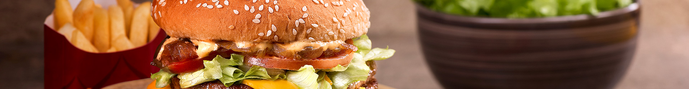
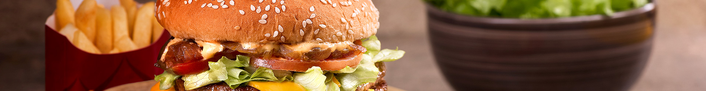

 



Do mais simples ao mais complexo.


Um doce de origem francesa muito gostoso e com ingredientes bem baratos.
Junte o suco concentrado de maracujá, o leite condensado e o creme de leite no liquidificador.
Após liquidificado, siga as instruções da gelatina e incorpore com na mistura.
Para a calda, junte a polpa do maracujá com a água e o açúcar, bote em uma panela e misture por uns 3 minutos, até que fique mais grosso, espere esfriar.
Bote o mousse de maracujá em uma tijela de vidro, bote a calda por cima, deixa na geladeira por no mínimo 1 hora.
Sirva em pequenos potes.
Para acompanhar, brigadeiro também combina muito bem para quebrar um pouco a acidez do maracujá, mas mesmo assim só o mousse já é muito bom.